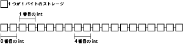

# 配列
# ナイーブなarray実装
std::arrayを実装してみよう。すでにクラスを作る方法については学んだ。
std::array<T,N>はT型の要素をN個保持するクラスだ。この<T,N>についてはまだ学んでいないので、今回はint型を3個確保する。いままでに学んだ要素だけで実装してみよう。
struct array_int_3
{
int m0 ;
int m1 ;
int m2 ;
} ;
そしてoperator []を実装しよう。引数が0ならm0を、1ならm1を、2ならm2を返す。それ以外の値の場合、プログラムを強制的に終了させる標準ライブラリ、std::abortを呼び出す。
struct array_int_3
{
int m0 ; int m1 ; int m2 ;
int & operator []( std::size_t i )
{
switch(i)
{
case 0 :
return m0 ;
case 1 :
return m1 ;
case 2 :
return m2 ;
default :
// 間違った引数
// 強制終了
std::abort() ;
}
}
} ;
これは動く。では要素数を10個に増やしたarray_int_10はどうなるだろうか。要素数100個はどう書くのだろうか。この方法で実装するとソースコードが膨大になり、ソースコードを出力するソースコードを書かなければならなくなる。これは怠惰で短気なプログラマーには耐えられない作業だ。
# 配列
std::arrayを実装するには、配列(array)を使う。
int型の要素数10の配列aは以下のように書く。
int a[10] ;
double型の要素数5の配列bは以下のように書く。
double b[5] ;
配列の要素数はstd::array<T,N>のNと同じようにコンパイル時定数でなければならない。
int main()
{
std::size_t size ;
std::cin >> size ;
// エラー
int a[size] ;
}
配列は={1,2,3}のように初期化できる。
int a[5] = {1,2,3,4,5} ;
double b[3] = {1.0, 2.0, 3.0 } ;
配列の要素にアクセスするにはoperator []を使う。
int main()
{
int a[5] = {1,2,3,4,5} ;
// 4
std::cout << a[3] ;
a[2] = 0 ;
// {1,2,0,4,5}
}
配列にはメンバー関数はない。at(i)やsize()のような便利なメンバー関数はない。
配列のサイズはsizeofで取得できる。配列のサイズは配列の要素の型のサイズ掛けることの要素数のサイズになる。
int main()
{
auto print = [](auto s){ std::cout << s << "\n"s ; } ;
int a[5] ;
print( sizeof(a) ) ;
print( sizeof(int) * 5 ) ;
double b [5] ;
print( sizeof(b) ) ;
print( sizeof(double) * 5 ) ;
}
sizeofは型やオブジェクトのバイト数を取得するのに対し、vectorやarrayのメンバー関数size()は要素数を取得する。この違いに注意すること。
int main()
{
auto print = [](auto s){ std::cout << s << "\n"s ; } ;
std::array<int, 5> a ;
// aのバイト数
print( sizeof(a) ) ;
// 要素数: 5
print( a.size() ) ;
}
配列はとても低級な機能だ。その実装はある型を連続してストレージ上に並べたものになっている。
int a[5] ;
のような配列があり、int型が4バイトの環境では、20バイトのストレージが確保され、その先頭の4バイトが最初の0番目の要素に、その次の4バイトが1番目の要素になる。最後の4番目の要素は最後の4バイトになる。
配列のストレージ上のイメージ図
□1つが1バイトのストレージ
1番目のint
|--|
□□□□□□□□□□□□□□□□□□□□
|--| |--|
0番目のint 4番目のint

配列にはメンバー関数がない上、コピーもできない。std::arrayはコピーできる。
int main()
{
int a[5] = {1,2,3,4,5} ;
// エラー、コピーできない
int b[5] = a ;
std::array<int, 5> c = {1,2,3,4,5} ;
// OK、コピーできる
std::array<int, 5> d = c ;
}
配列は低級で使いにくいので、std::arrayという配列をラップした高級なライブラリが標準で用意されている。
さて、配列の使い方は覚えたので、さっそくstd::array_int_10を実装してみよう。
まずクラスのデータメンバーとして配列を宣言する。
struct array_int_10
{
int storage[10] ;
} ;
配列はコピーできないが、クラスのデータメンバーとして宣言した配列は、クラスのコピーの際に、その対応する順番の要素がそれぞれコピーされる。
struct array_int_3 { int storage [3] ; } ;
int main()
{
array_int_3 a = { 0,1,2 } ;
array_int_3 b = a ;
// b.storage[0] == a.storage[0]
// b.storage[1] == a.storage[1]
// b.storage[2] == a.storage[2]
}
これはあたかも以下のように書いたかのように動く。
struct array_int_3
{
int storage[3] ;
array_int_3( array_int_3 const & other )
{
std::copy(
std::begin(other.storage), std::end(other.storage),
std::begin(storage)
) ;
}
}
operator []も実装しよう。
struct array_int_10
{
int storage[10] ;
int & operator [] ( std::size_t i )
{
return storage[i] ;
}
} ;
int main()
{
array_int_10 a = {0,1,2,3,4,5,6,7,8,9} ;
a[3] = 0 ;
std::cout << a[6] ;
}
std::arrayにはまださまざまなメンバーがある。1つずつ順番に学んでいこう。
← プログラマーの三大美徳 テンプレート →